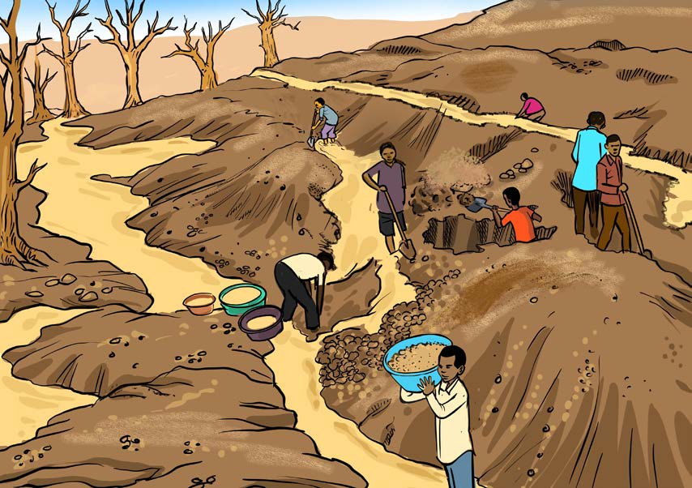

Athari zitokanazo na uchimbaji wa madini katika mazingira
Iwapo njia bora za uchimbaji wa madini hazitatumika, uharibifu wa mazingira unaweza kutokea. Uchimbaji wa madini unapomalizika, huacha mashimo makubwa. Endapo mashimo hayo hayatafukiwa yanaharibu mandhari ya eneo lililochimbwa na kusababisha ardhi isiweze kutumika kwa matumizi mengine. Vilevile, vumbi kutoka migodini huweza kusababisha magonjwa kama vile kifua, kikohozi na matatizo ya macho kwa binadamu. Aidha, kemikali zinazotumika kusafishia madini, mfano zebaki, isipodhibitiwa vizuri zikiingia kwenye vyanzo vya maji huathiri viumbe vya majini pamoja na binadamu wanaotumia maji hayo. Kielelezo namba 10 kinawasilisha athari za uchimbaji wa madini katika mazingira.
